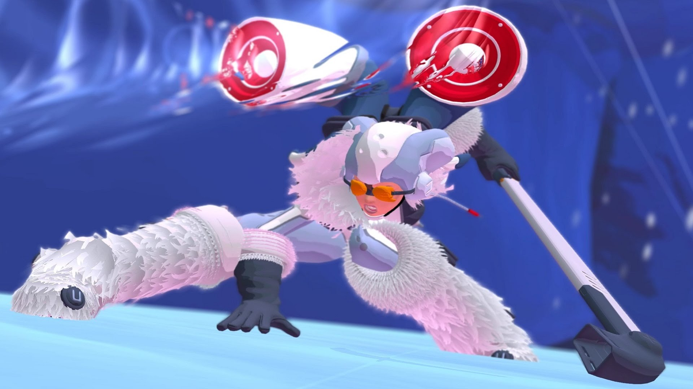
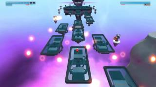

So you have reached the final guardian, your last obstacle on your road to freedom. After so many powerful and skilled fighters who did they put to make sure you never leave, the last ditch effort to stop. The last and final guardian is none other than....a little girl. No I am not kidding, they decided to put a little girl up against a powerful crazy laser samurai.“Alright” you may say “Perhaps she has some kind of super weapon” and you would be right. That super weapon is shoulder mounted sound guns that take three seconds to shoot against a man who can MOVE FASTER THAN THE EYE CAN SEE
But in all seriousness she is probaly one of the most unique and intersting characters I have seen in a video game. She also tells you a lot about who you are and why you were impirsoned. So according to her the reason why you can’t leave is because you will destroy the world. Now, the reason why a little girl is there is because she would rather die fighting for something than die doing nothing. Which is quite an interesting idea for a character and also makes her the only boss you can feel remotley bad about. Which was probaly the story reason why she was even put there, the chance that you would feel an ounce of empathy and wouldn’t try to get past her since it means that you have to kill a little girl. But as you have had to deal with bosses like The Burst and The Edge you, as the player will be so mad at the game that you won’t even care. Now in terms of design, she is actually pretty unique. The sort of hockey player look is pretty fitting for her character gicing her a sort of innocent yet brave look. As always, lets get into the fight. This fight is the easiest fight I have ever seen, the mere thought that anyone could possibly die to this fight makes me laugh. “Well, what is the gimmick of this fight that will surely add some difficulty?” you ask. Well the gimmick is actually the fight, what is it you ask? Well have you played mario? Then you have fought The Beat. The fight involves you jumping from platform to platform while dodging shots fired from small turrets and The Beat herself.
The only notable part of the fight is that during the last melee phase The Beat will just scream how you are monster and how there you can not go to the free world. She will also do no damage during this part so it is essentially a glorified cutscene. So just dodge and shoot and you will be fine.